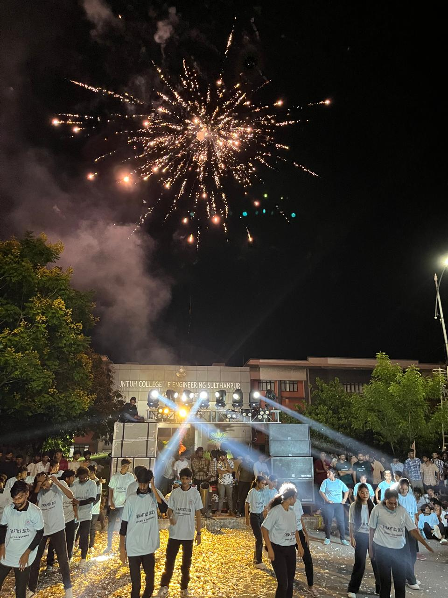
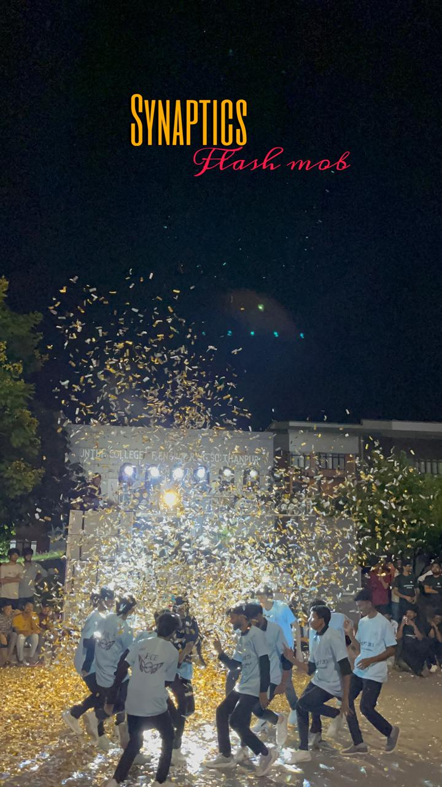
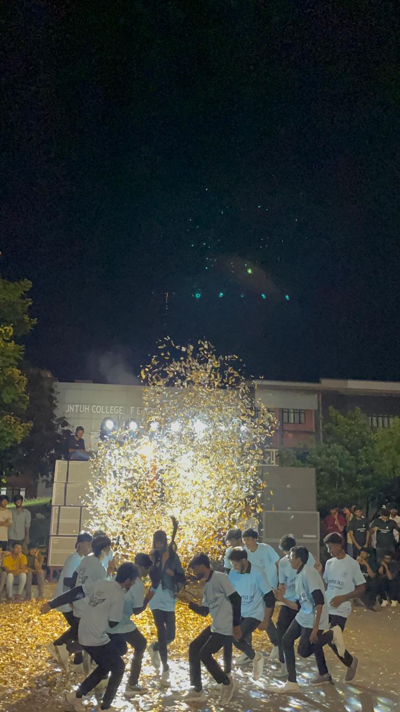
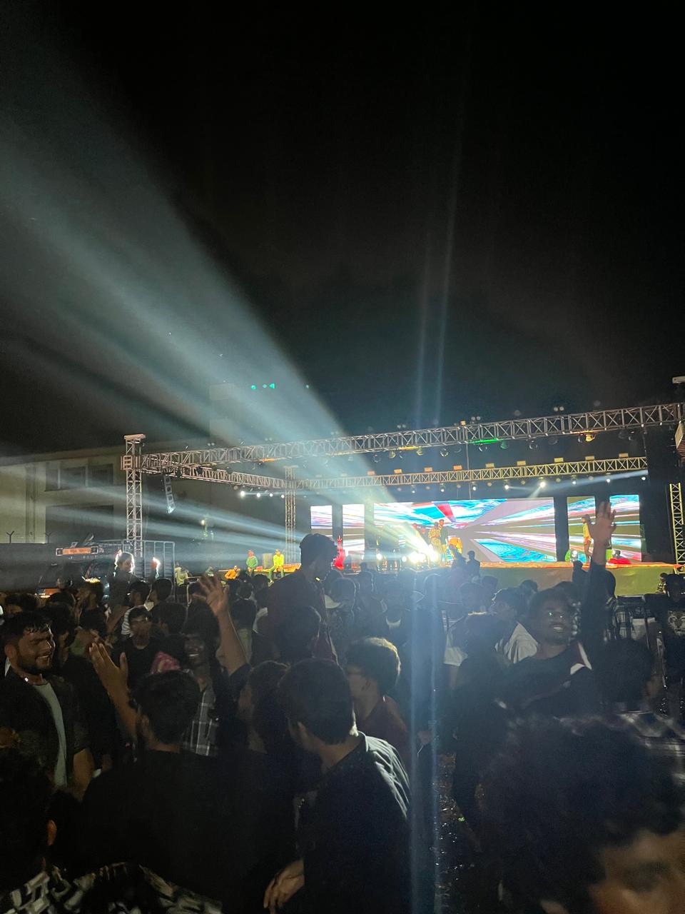

2K26
The Neural Architecture of Innovation
The Neural Architecture of Innovation
Synaptics 2K26 is the premier national-level technical symposium organized by the Department of ECE at JNTUH UCES. It acts as a convergence point for future-ready engineers to demonstrate expertise in VLSI Design, Signal Processing, and Embedded Intelligence.
For over a decade, we have been the catalyst for technical disruption, bringing together thousands of participants from across the nation to sync their minds and innovate.
To bridge the gap between abstract neural concepts and silicon reality through rigorous competition and collaborative learning.
Real-time symposium data synchronization in progress...



